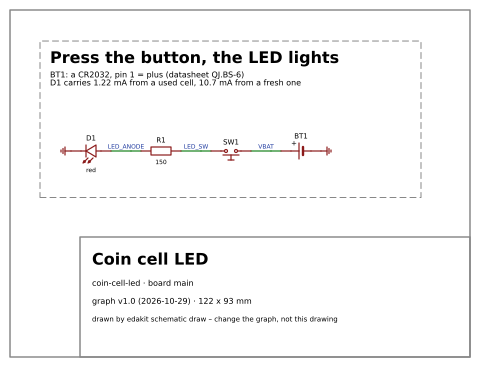
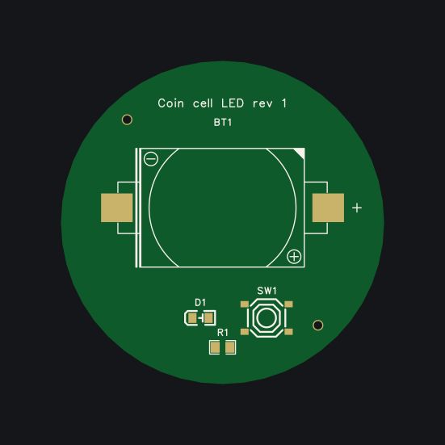

A session: from an idea to the cart
For you if you want to see what working with edakit looks like before you install anything. After this page you know what you type, what Claude asks and what is left for you outside the chat.
The board is the walkthrough's: a coin cell, a button and a red LED. Claude's answers are shortened. The full story, with every file, is the walkthrough.
Once: add the plugin in Claude Code, install uv and ngspice.
A board for my desk: a coin cell, a push button and an LED. Press the button and the LED lights.
I'll set the project up first. One form, the recommended answer first.
A PCB or a development board?
A PCB
Drawn in?
EasyEDA Pro (recommended)
Who makes it?
JLCPCB, top side assembled, SMD only
How many sets?
5
A budget?
none
What is it for, and where?
for myself, in the EU
The requirements?
now
Firmware?
none
Here is every file and key, each with the answer behind it. Write them?
ok
edakit.toml, hardware/graph.json, docs/decisions.md written"The LED lights" – from what current on? I suggest at least 1 mA.
fine
Down to which cell? I suggest a used CR2032 at 2.5 V, the end voltage Rayovac rates its capacity to.
yes
Two needs and two requirements are drafted in hardware/requirements.toml. R-1: while SW1 is pressed, D1 carries at least 1 mA, from a fresh cell down to 2.5 V. Only you accept them.
accept
edakit block add led · edakit part search · edakit check · edakit simThe block's green LED needs 2.6 to 3.1 V. A used cell gives it 0.4 mA, and R-1 asks for 1 mA. I took a red one, C84256: 1.22 mA from a used cell, 10.7 mA from a fresh one. Two findings are left for you.
PATH.reverse: a CR2032 put in upside down reaches R1 and D1. Protect against it?
- No protection (recommended): D1 blocks, 3.2 V against its rated 5 V.
- A Schottky diode in series: it costs 0.3 V, the margin a used cell needs.
No protection
LIM.i: held down, SW1 draws 10.7 mA from a fresh cell. It is rated 3 mA continuous, 15 mA in pulses.
- Accept it: a press is short (recommended).
- A pulse limit per load.
Accept it
I decided myself: the red LED instead of the block's green one. Confirm?
yes
Written to docs/decisions.md, each with its reason and date.
edakit stock · edakit costJLCPCB places the holder BT1 only in Standard assembly: 52.60 USD for five boards instead of 20.65.
- You solder BT1 by hand: two SMD tabs, five holders in the LCSC cart (recommended).
- Standard assembly.
- A Lian Xin holder Economic places. Its drawing does not say which pad is plus.
I solder it
edakit schematic draw
A checked circuit and its drawing. That is enough to wire it by hand. Stop here, or on to a board?
a board
Two reviewers check it now, each in a session of its own: the electrical one and the regulatory one. The regulatory review is support, not legal advice.
Start each reviewer in a new session when Claude asks.
Who uses the board? The cell comes out by hand, and a swallowed coin cell burns.
- Adults at a desk, out of reach of small children (recommended).
- Children: then a holder that needs a tool.
Adults at a desk
R-2, dark while nobody presses, has no number. At most 1 µA from the cell?
yes
Fixed. Both reviewers looked again, found one more slip, and signed.
Install EasyEDA Pro. Create the project by hand: File → New → Project, "coin-cell-led".
Start a new session and type /edakit:pcb-round.
The board's size and shape? And what must stay where a person touches or looks?
Round, please.
Ø 44 mm. The cell nearly in the middle, 10 mm above it to lever it out. Button, LED and resistor below.

In EasyEDA: Design → Import Changes, once, when Claude says so.

Release it and put it into the JLCPCB cart.
edakit gate --eda: RELEASEDShip to which country, and how?
your answer
/edakit:cart: every field set and read back, the quote checked against the estimate. Stopped at the cart.Check D1's cathode in JLCPCB's preview, then order and pay.
When the boards arrive: solder BT1, test each board against the list.